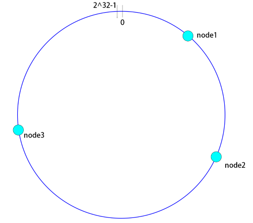
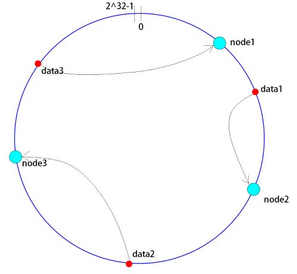

假如有一个存储介质集群, 每一个节点存储的数据与其他节点都不一致. 通过hash函数, 我们可以计算出一个索引值, 来确定数据应该存入哪一个节点, 或者从哪一个节点查询出来. 最简单的实现是直接取余.
public int NODE_COUNT = 3;
public int getNodeIndex(int data){
return data % NODE_COUNT;
}
但是, 这样存在一个问题, 如果这个集群扩容或者其中一个节点宕机, 会导致NODE_COUNT发生变化, 所有历史存储数据的存储位置都可能会受到影响. 一致性hash就是用来解决这个问题的.
一致性hash算法同样是取余, 但是不是对节点数量进行取余, 而是对2^32进行取余. 显然取余的结果会有2^32中可能, 为了形象的理解, 将这2^32个位置想象为均匀分布在一个圆环上. 整个圆环以顺时针方向进行组织, 圆环正上方的点代表0, 由此的第一个点代表1, 以此类推. 然后, 将各个服务器使用服务器的IP或主机名等唯一标识符进行hash, 确定每台服务器在hash环上的位置.
假设有三台服务器, 使用ip地址进行hash后, 在环上的位置如图:

接下来, 使用以下算法, 将数据定位到指定的节点上:
根据数据的key通过hash函数, 计算出hash值, 通过对2^32取余, 求得在环上的位置, 从此位置, 沿顺时针方向查找, 遇到的服务器就是该数据应该存放的服务器.

这就是一致性hash.
接上面的例子, 假设节点3宕机了. 这时, 原来存储在节点1,2上的数据不受影响, 存储在节点3上的数据丢失, 新的数据会入到节点1上.
另一种情况, 假设新增加了一个节点4. 位置在3和1之间, 这时, 3到4直接的数据会受到影响, 其余数据都不会受到影响.
在一致性hash算法中, 服务节点太少的情况下, 可能会因为节点分布不均匀导致数据倾斜(大部分数据存储到了某一个节点上), 如图所示:

这时, 需要引入虚拟节点机制. 即, 对每一个服务器节点, 计算出多个不同的hash值, 每个计算结果都防止一个此服务节点, 称为虚拟节点. 如图所示:

数据定位算法不变, 只需增加一步, 虚拟节点到实际节点的映射. 这样就实现了节点很少时, 数据也能均匀分布.
/**
* 一直性hash算法简单实现
*/
public class ConsistencyHash {
private static final Logger logger = LoggerFactory.getLogger(ConsistencyHash.class);
public static void main(String[] args){
// 初始化数据
Random r = new Random();
RepositoryFrontend repository = new RepositoryFrontend();
String testKey = null;
for(int i = 0; i < 1000; i++){
String val = UUID.randomUUID().toString().replaceAll("-", "");
repository.put(val, String.valueOf(r.nextInt(10000)));
testKey = val;
}
// 查看数据存储分布情况
Collection<Node> nodes = repository.nodes.values();
HashSet<String> nodeSet = new HashSet<>();
for(Node node : nodes){
if(nodeSet.add(node.address)){
logger.info("node : {} has key count : {}", node.address, node.kv.size());
}
}
// 查询
String val = repository.get(testKey);
logger.info("test query get k : {}, v : {}", testKey, val);
}
private static class RepositoryFrontend {
// 每个真实节点对应的虚拟节点数量
private static final int visual_node_count = 5;
TreeMap<Integer, Node> nodes = new TreeMap<>();
public RepositoryFrontend(){
addNode(new Node("192.168.1.235"));
addNode(new Node("192.168.1.120"));
}
/**
* 增加存储节点
*/
private void addNode(Node node){
/*
* 增加虚拟节点, 防止数据倾斜
* 如果Objects.hash得到的值出现hash冲突怎么办? 为了突出主要逻辑, 这里暂时不考虑
*/
for(int i = 0; i < visual_node_count; i++){
nodes.put(Objects.hash(node.address + UUID.randomUUID().toString()), node);
}
}
// 存储
public void put(String key, String value){
int keyHash = Objects.hash(key);
Node node = this.searchNode(keyHash);
node.kv.put(key, value);
}
// 查询
public String get(String key){
int keyHash = Objects.hash(key);
Node node = this.searchNode(keyHash);
return node.kv.get(key);
}
/**
* 定位到存储的节点
*/
private Node searchNode(int keyHash){
if(!nodes.containsKey(keyHash)){ // key的hash值不是正好落在节点上
// 获取一个子集, 其所有key大于等于keyHash的值
SortedMap<Integer, Node> tailMap = nodes.tailMap(keyHash);
if(tailMap.isEmpty()){
keyHash = nodes.firstKey();
}else{
keyHash = tailMap.firstKey();
}
}
return nodes.get(keyHash);
}
}
private static class Node{
HashMap<String, String> kv = new HashMap<>();
final String address;
public Node(String address){
this.address = address;
}
}
}